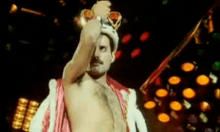
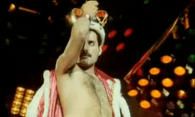
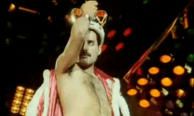

„Queen“ – britų roko grupė, susikūrusi 1970 m. Londone. BBC televizijos apklausoje „Queen“ buvo išrinkta geriausia Didžiosios Britanijos visų laikų grupe. Jų 1985-ųjų gyvas pasirodymas buvo išrinktas geriausiu gyvu roko pasirodymu visoje muzikos istorijoje. Pagal BBC iki 2009 m. „Queen“ yra pardavusi daugiau nei 300 milijonų albumų kopijų visame pasaulyje. Iš visų grupės įrašų net 18 albumų, 18 singlų ir 10 DVD yra pasiekę aukščiausias topų vietas. 2001 m. „Queen“ buvo įrašyta į Rokenrolo šlovės muziejų.
„Queen“ grupės logotipą sukūrė F. Merkuris iš karto po pirmojo albumo išleidimo.
Logotipas simbolizuoja visų keturių grupės narių zodiako ženklus: du liūtus (Deacon ir Taylor),
vėžį (May) ir dvi fėjas, simbolizuojančias F. Merkurio mergelės ženklą. Abu liūtai iš dviejų pusių laiko stilizuotą Q raidę,
vėžys, virš kurio kyla liepsna, pavaizduotas ant raidės viršaus. Abi fėjos yra iš abiejų Q raidės pusių po liūtais. Viduryje
Q raidės yra karūna, o virš Q raidės ir visų simbolių yra iškilęs feniksas. Visas logotipas primena Jungtinės Karalystės herbą.
